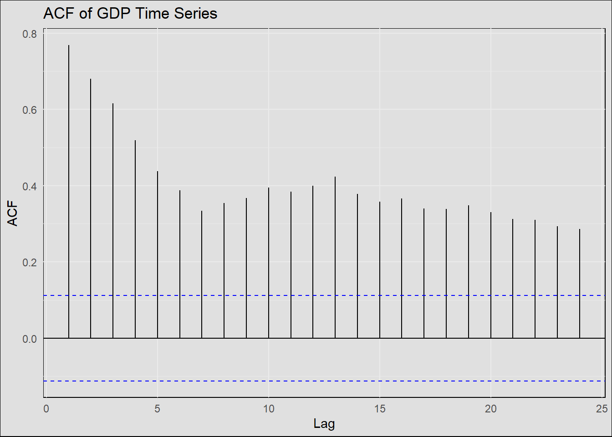

Exploratory Data Analysis
The Household Income Data Analysis

From the plot, you can visually inspect:
Trend: Any consistent upward or downward direction. Seasonality: Any repeating patterns or cycles. Variation: Fluctuations in the data. Periodic fluctuations: Spikes or drops at consistent intervals. Determine if the time series looks multiplicative or additive. An additive time series has constant amplitude and frequency, while a multiplicative one has varying amplitude/frequency.

You’d interpret the lag plot by looking for any structure. If the points cluster along a diagonal line from bottom-left to top-right, there’s a positive correlation. Any other pattern might suggest non-linearity or some pattern not captured by mere linear correlation

Warning in adf.test(df$W398RC1A027NBEA): p-value greater than printed p-value
Augmented Dickey-Fuller Test
data: df$W398RC1A027NBEA
Dickey-Fuller = 0.038046, Lag order = 3, p-value = 0.99
alternative hypothesis: stationaryThe Median House Sale Price Data Analysis

From the plot, you can visually inspect:
Trend: Any consistent upward or downward direction. Seasonality: Any repeating patterns or cycles. Variation: Fluctuations in the data. Periodic fluctuations: Spikes or drops at consistent intervals. Determine if the time series looks multiplicative or additive. An additive time series has constant amplitude and frequency, while a multiplicative one has varying amplitude/frequency.

You’d interpret the lag plot by looking for any structure. If the points cluster along a diagonal line from bottom-left to top-right, there’s a positive correlation. Any other pattern might suggest non-linearity or some pattern not captured by mere linear correlation

Augmented Dickey-Fuller Test
data: df$MSPUS
Dickey-Fuller = -2.6866, Lag order = 6, p-value = 0.287
alternative hypothesis: stationary
The Housing Affordability Index Data Analysis
Code
library(ggplot2)
ggplot(data = df, aes(x = DATE, y = PSAVERT)) +
geom_line(color = "blue") +
labs(title = "Time Series Plot of Housing Affordability Index",
x = "Date",
y = "The Housing Affordability Index") +
theme_minimal() +
theme(panel.background = element_rect(fill = "#E0E0E0"),
panel.grid.major = element_line(color = "grey", size = 0.1),
panel.grid.minor = element_line(color = "grey", size = 0.05),
plot.background = element_rect(fill = "#E0E0E0"))
From the plot, you can visually inspect:
Trend: Any consistent upward or downward direction. Seasonality: Any repeating patterns or cycles. Variation: Fluctuations in the data. Periodic fluctuations: Spikes or drops at consistent intervals. Determine if the time series looks multiplicative or additive. An additive time series has constant amplitude and frequency, while a multiplicative one has varying amplitude/frequency.
Code
# Lag plot
lagged_data <- data.frame(value = df$PSAVERT[-1],
lagged_value = df$PSAVERT[-length(df$PSAVERT)])
# Enhanced Lag Plot
ggplot(data = lagged_data, aes(x = lagged_value, y = value)) +
geom_point(color = "blue", alpha = 0.5) +
labs(title = "Lag Plot (lag=1)",
x = "Value at t-1",
y = "Value at t") +
theme_minimal() +
theme(panel.background = element_rect(fill = "#E0E0E0"),
panel.grid.major = element_line(color = "grey", size = 0.1),
panel.grid.minor = element_line(color = "grey", size = 0.05),
plot.background = element_rect(fill = "#E0E0E0"))
You’d interpret the lag plot by looking for any structure. If the points cluster along a diagonal line from bottom-left to top-right, there’s a positive correlation. Any other pattern might suggest non-linearity or some pattern not captured by mere linear correlation
Code
#library(ggfortify)
# Decomposition using ggplot2 styling
decomposed <- decompose(ts(df$PSAVERT, frequency=12), type = "additive")
autoplot(decomposed) +
theme_minimal() +
theme(panel.background = element_rect(fill = "#E0E0E0"),
plot.background = element_rect(fill = "#E0E0E0"))
Code
library(forecast)
# ACF Plot
ggAcf(df$PSAVERT) +
labs(title = "ACF of Housing Affordability Index Time Series") +
theme_minimal() +
theme(panel.background = element_rect(fill = "#E0E0E0"),
plot.background = element_rect(fill = "#E0E0E0"))
Code
# PACF Plot
ggPacf(df$PSAVERT) +
labs(title = "PACF of Housing Affordability Index Time Series") +
theme_minimal() +
theme(panel.background = element_rect(fill = "#E0E0E0"),
plot.background = element_rect(fill = "#E0E0E0"))
The ACF plot can help determine if the series is stationary. If the series is non-stationary, the ACF will decay slowly, while for a stationary series, the ACF will drop off quickly
Code
library(tseries)
adf.test(df$PSAVERT)
Augmented Dickey-Fuller Test
data: df$PSAVERT
Dickey-Fuller = -3.543, Lag order = 9, p-value = 0.03817
alternative hypothesis: stationarystationary !
Code
detrended_data <- data.frame(Date = df$DATE[-1], Detrended = diff(df$PSAVERT))
# Enhanced Detrended Plot
ggplot(data = detrended_data, aes(x = Date, y = Detrended)) +
geom_line(color = "blue") +
labs(title = "Detrended Time Series",
x = "Date",
y = "Detrended Value") +
theme_minimal() +
theme(panel.background = element_rect(fill = "#E0E0E0"),
panel.grid.major = element_line(color = "grey", size = 0.1),
panel.grid.minor = element_line(color = "grey", size = 0.05),
plot.background = element_rect(fill = "#E0E0E0"))Code
log_transformed_data <- data.frame(Date = df$DATE, LogTransformed = log(df$PSAVERT))
# Enhanced Log-transformed Plot with Custom Background
ggplot(data = log_transformed_data, aes(x = Date, y = LogTransformed)) +
geom_line(color = "blue") +
labs(title = "Log-transformed Time Series of Housing Affordability Index",
x = "Date",
y = "Log-transformed Value") +
theme_minimal() +
theme(panel.background = element_rect(fill = "#E0E0E0"),
panel.grid.major = element_line(color = "grey", size = 0.1),
panel.grid.minor = element_line(color = "grey", size = 0.05),
plot.background = element_rect(fill = "#E0E0E0"))The GDP Exploratory Data Analysis

From the plot, you can visually inspect:
Trend: Any consistent upward or downward direction. Seasonality: Any repeating patterns or cycles. Variation: Fluctuations in the data. Periodic fluctuations: Spikes or drops at consistent intervals. Determine if the time series looks multiplicative or additive. An additive time series has constant amplitude and frequency, while a multiplicative one has varying amplitude/frequency.


Augmented Dickey-Fuller Test
data: df$A191RI1Q225SBEA
Dickey-Fuller = -3.8947, Lag order = 6, p-value = 0.01466
alternative hypothesis: stationary

The Mean Sale Price Analysis


ADF Statistic: -5.271328121414676p-value: 6.276331376552306e-06Critical Values: 1%: -3.4364647646486093
5%: -2.864239892228526
10%: -2.5682075189699822